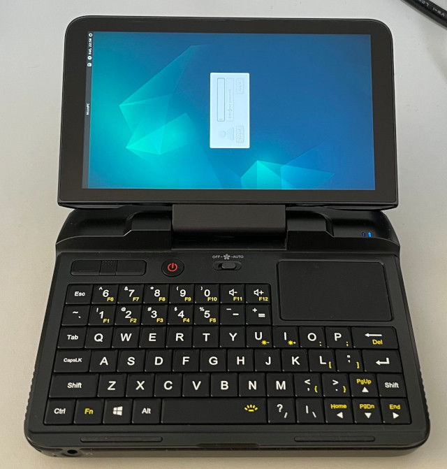

參考資訊：
https://gitlab.com/runout/gpd-micropc
https://github.com/joshskidmore/gpd-micropc-arch-guide
安裝步驟：
1. 下載https://cdimage.debian.org/debian-cd/current/amd64/iso-dvd/debian-12.2.0-amd64-DVD-1.iso並且製作USB開機碟
2. 開機並且按下F7，選擇從USB開機安裝
Debian 12已經支援的很好，安裝完成後，音量、亮度和無線WIFI都可以正常運作
